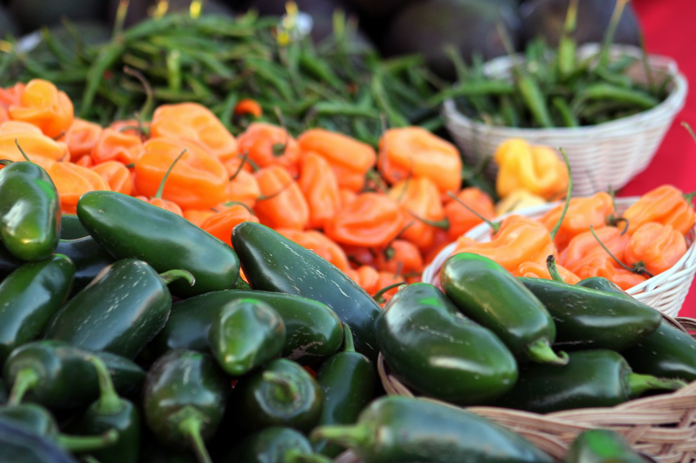

Waste less from the start.
Encourage thoughtful portions and practical changes in campus dining.
We’re proposing a better connection between safe surplus food and students who need a meal.

College students can struggle to afford meals while safe, unserved food goes unused. Connecting the two takes more than good intentions: it takes reliable partners, careful planning, and respect.
Meet the proposalEncourage thoughtful portions and practical changes in campus dining.
Explore partnerships to redirect suitable, unserved food through established assistance providers.
Make student experiences part of the plan and complement existing food assistance.
Our case brings together research on college food insecurity and dining hall waste. We distinguish what studies show from what we propose to do.
Read our caseStudents, food businesses, and campus supporters each have a role.